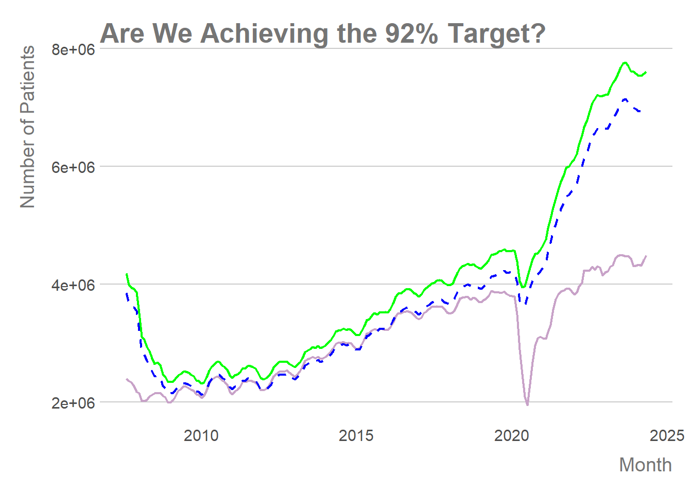
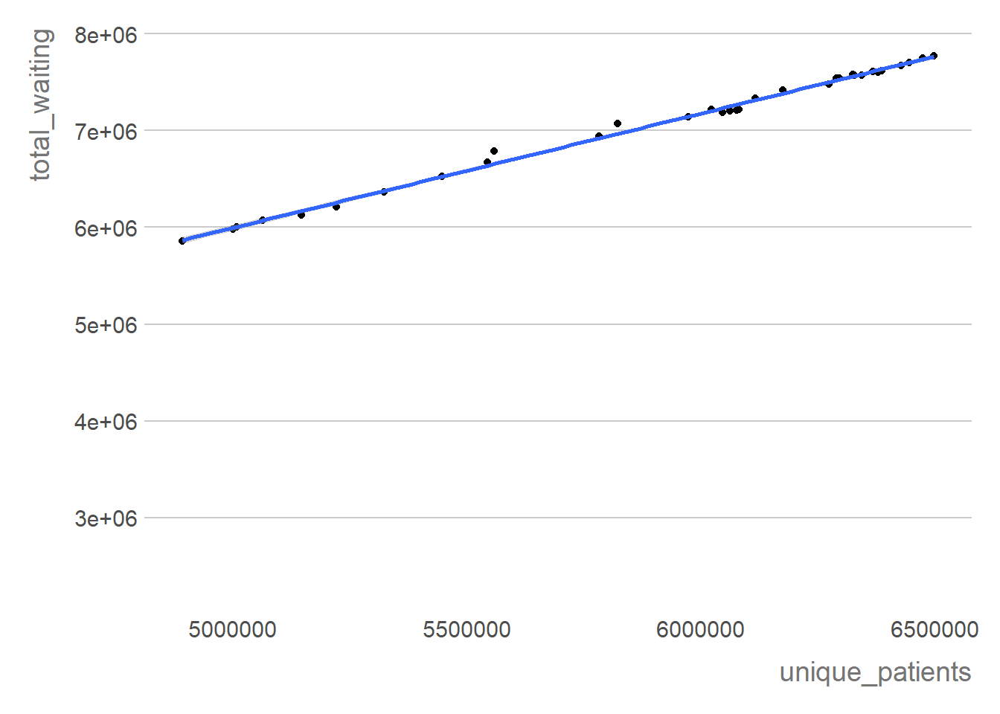
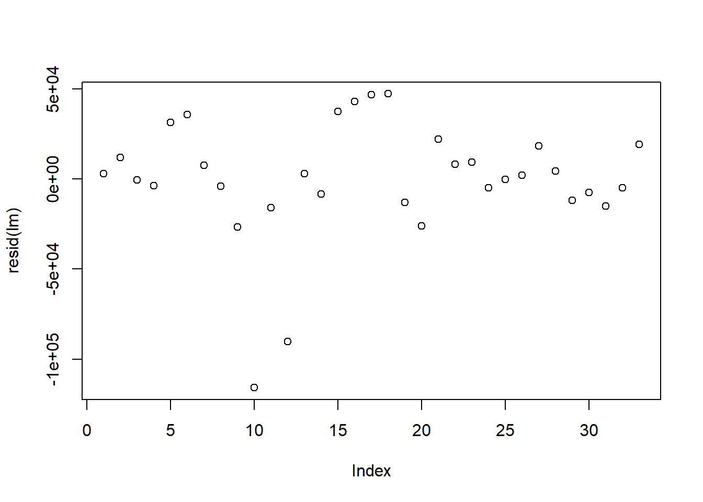
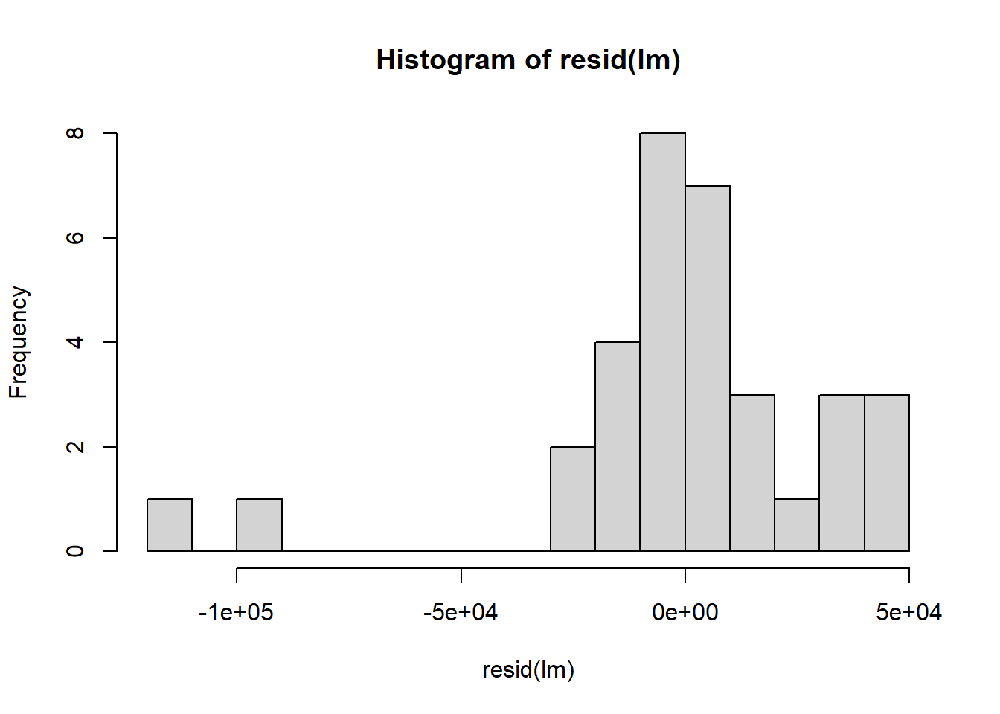

Running Out of Time: The State of NHS Waiting Lists
It is no secret that since the COVID-19 pandemic the NHS has faced unprecedented demand. A backlog of appointments, strikes and the worsening health of the general population have all factored into this.
In the 2024 election NHS waiting lists were a key campaign point for (insert here some examples). But how dire is the situation with NHS waiting lists?
Referral to Treatment (RTT)
Referral to Treatment (RTT) refers to the amount of time a patient waits before receiving elective treatment after being referred to a consultant led service. This could be for anything from a patient being referred for a hip replacement, due to a positive FIT test or to be treated for rheumatoid arthritis.
In England the NHS constitution set out that patients should have to wait a maximum of 18 weeks from the point of referral to receiving first definitive treatment (FDT) for their condition. The aim was for 92% of patients to meet this target.
Lets take us a look at the median RTT performance for each month, from 2007 to May of this year.
On Average Patients Are Waiting Longer for Treatment Than Pre-Pandemic

It is clear that the median weeks waited for treatment has increased since COVID, and only seems to be growing, however the median is still far below 18 weeks. So are we reaching that 92% target?


How Many Patients Above Target Are We?


When it Rains it Pours
Not all services are as in demand. Some services have far larger pressures and so far larger RTT waits for patients.
Are They New Patients?



##
## Call:
## lm(formula = unique_patients ~ total_waiting, data = RTT_data)
##
## Residuals:
## Min 1Q Median 3Q Max
## -115731 -8295 2107 18240 47150
##
## Coefficients:
## Estimate Std. Error t value Pr(>|t|)
## (Intercept) -5.154e+04 7.019e+04 -0.734 0.468
## total_waiting 8.430e-01 9.884e-03 85.291 <2e-16 ***
## ---
## Signif. codes: 0 '***' 0.001 '**' 0.01 '*' 0.05 '.' 0.1 ' ' 1
##
## Residual standard error: 33810 on 31 degrees of freedom
## (187 observations deleted due to missingness)
## Multiple R-squared: 0.9958, Adjusted R-squared: 0.9956
## F-statistic: 7275 on 1 and 31 DF, p-value: < 2.2e-16